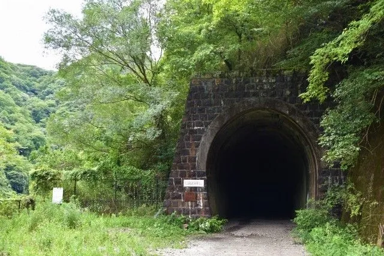
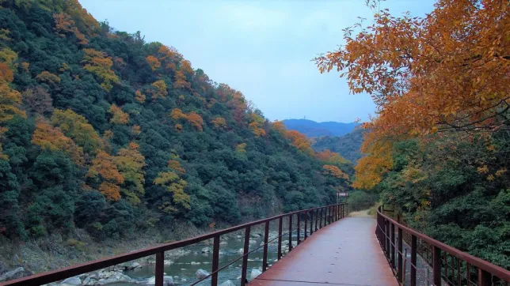

I also enjoy hiking and walking in nature. The Japanese countryside is very different to that found in England. There are a lot more mountains and a lot less field of green grass. One of my favourite places to hike is a place called 'Takedao'. A railway track used to run through here, so there are a number of abandoned tunnels to walk through that are pitch black. The hiking trail also follows a river through the mountains which is beautiful.
  RETURN TO HOMEPAGE